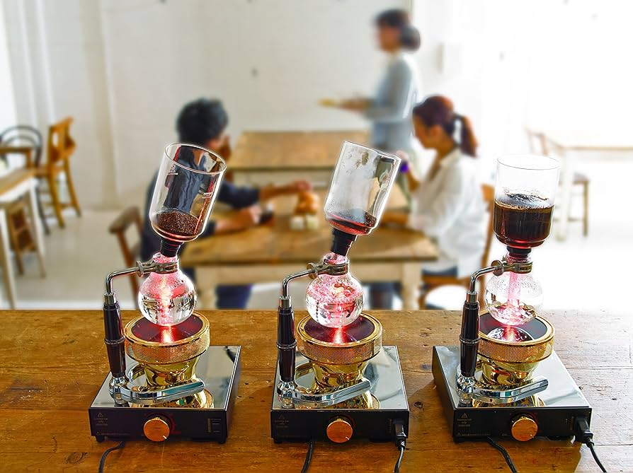
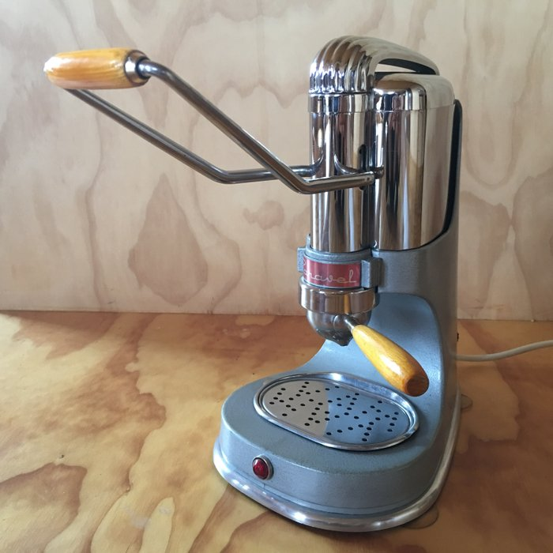
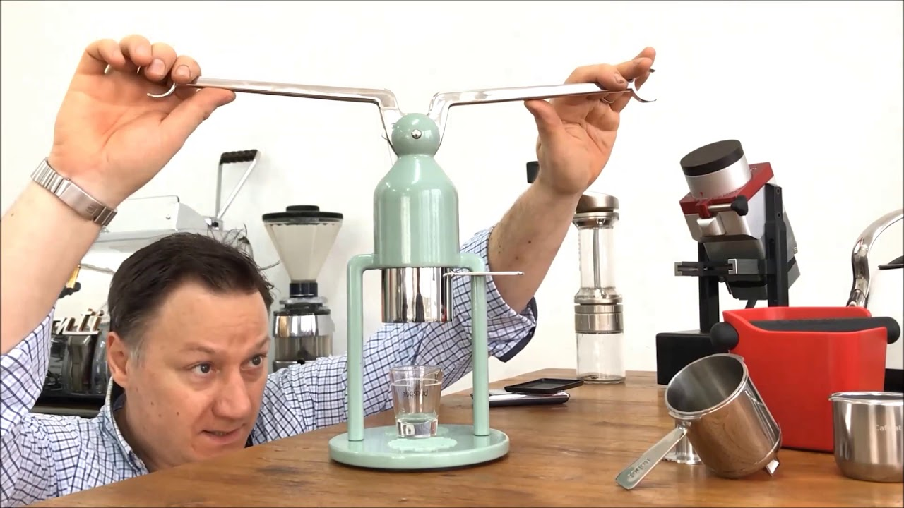
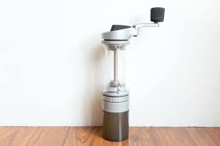
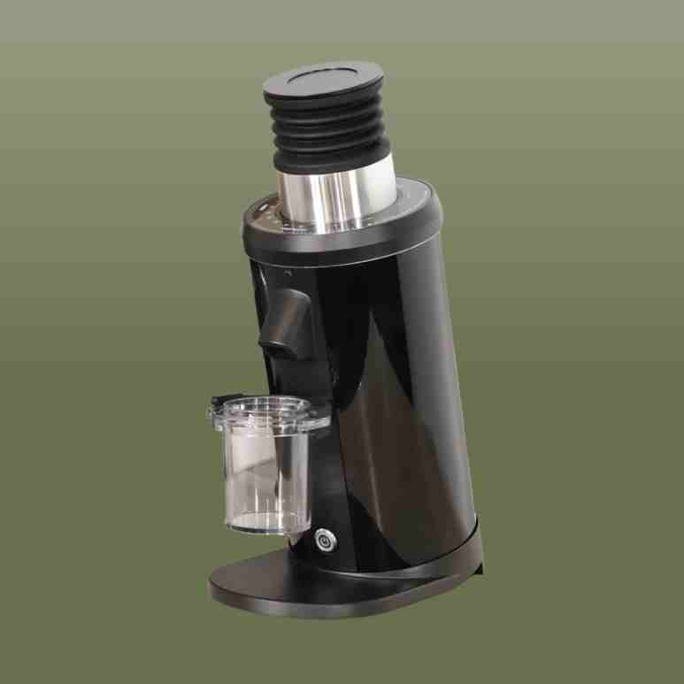
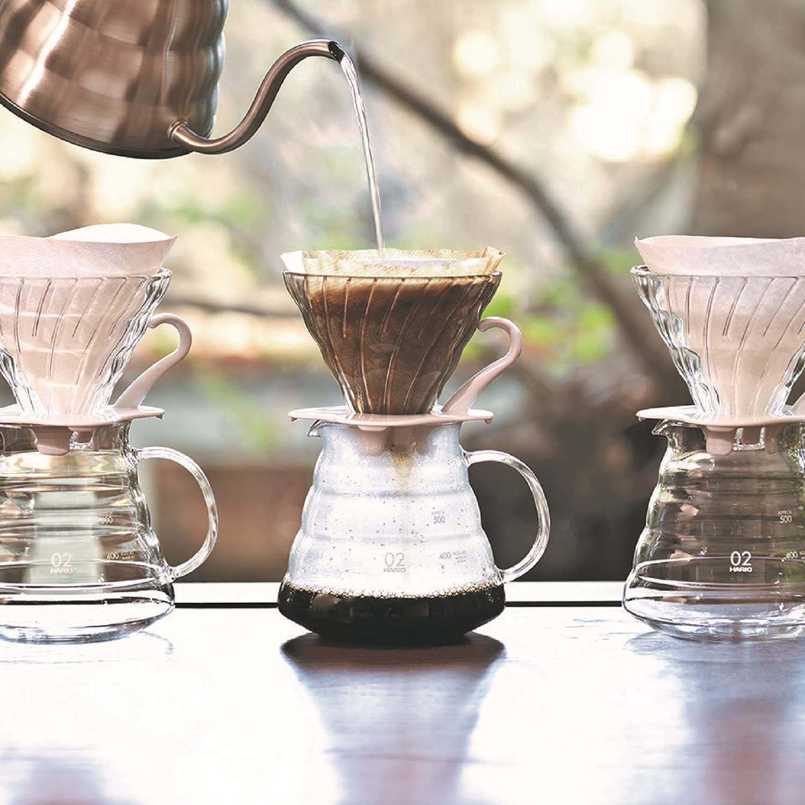

Aeropress may be the most economical way to begin coffee as a 'hobby'. Its cheap, can be found at target, and allows you to experiment. There are tons of recipes freely available online (here is a good resource). Out of all my coffee contraptions, I certainly use the aeropress most frequently
It consists of a filter holder, which can use either a metal (I don't like these) or paper filter, a brew chamber, and a plunger
To summarize: 1: a filter is placed in the filter holder (rinse if it's a paper filter 2: connect the filter holder with the filter to the brew chamber and place it on your cup or carafe 3: add ground coffee 4: add hot water to desired level and wait according to your preference 5: Insert the plunger and slowly push until a light hiss is heard.
Siphon
I bought one of these at a thrift store recently, but I've always wanted to try it. It has become my new go-to anytime I have a friend over. It makes about two and a half full cups, and the elaborate brew process has yet to get old. I was surprised how intuitive it is to use. It uses a small alcohol lamp to heat the coffee in the lower chamber to a boil, then an upper chamber with a gasket is inserted, which forces the boiling water into the upper chamber where it cools slightly to a relatively hot brew temperature. You then add your ground coffee to that water in the top chamber and let it brew for a few minutes. When you're ready you turn off the alcohol burner, and the cooling empty lower chamber will vacuum the coffee through the cloth filter in the upper chamber. Once all the coffee has been pulled through, the top chamber can be carefully removed and set aside. It seems to work especially well for very lightly roasted coffees that require a high temp.
Espresso
Espresso is a hobby in itself, and there is too much information to list here. It requires a higher initial investment to get acceptable results. The most important piece of equipment will be a high quality burr grinder. Many beginners in espresso choose to start with a manually operated espresso machine and grinder to save money. These days, you could realistically get a capable set up for a few hundred dollars. Just a few years ago, it was tough to find an espresso machine and grinder below around 500
My espresso machines
 
I've acquired a few espresso machines over the years. I started with a lever operated but electronically heated Caravelle. It has a European plug, so it's sort of annoying to use. In around 2018, I switched to a Cafelat Robot, which is entirely manual. This machine looks very cool and I enjoy its simple streamlined workflow. About 3 years ago, I obtained an E61 machine, which honestly is more trouble than its worth. I do enjoy using the steam wand to make hot chai and ciders though. I'm too lazy to sell it. The Robot gets used the most
My coffee grinders
 I used a Lido E from orphan espresso for many years. I added a ebay special DF64 single dose grinder a couple years ago and haven't looked back. Manual grinding is great and cheap, but I really don't miss it. I still use the hand grinder for weird coffees or very coarse grinds.
V60
The V60 is what most people think about when they hear pour over. I really like the basic plastic one in the smallest size they offer. You don't have to use much coffee in it, and it doesn't really need to be preheated. Unlike the aeropress, which is also a great cheap coffee maker, this one requires a gooseneck kettle for best results.
Chemex
The chemex is a big pyrex glass carafe with a built in filter holder. It was designed in the middle of the last century by a serial entrepreneur, who created all sorts of gadgets. I found a very old one at an estate sale that included the original brochure. They suggested that you could also use it as a carafe to make cocktails, or a kitchen utensil holder.
Although I really do like making coffee with these, I've sort of fallen out of love with them lately. The chemex filters are oddly shaped and have a tendency to clog.